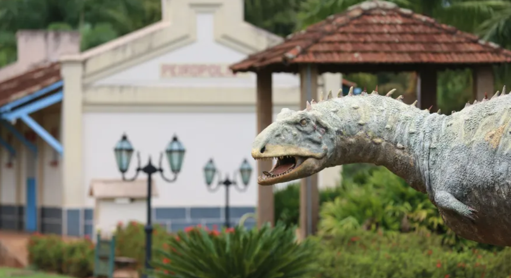

Geossítio Peirópolis
O Geossítio Peirópolis envolve todo Bairro de Peirópolis, atualmente com cerca de 350 moradores. Historicamente representa a sede da paleontologia em Uberaba, cuja relevância científica foi revelada no ano de 1946, a partir dos trabalhos do paleontólogo Llewellyn Ivor Price. No ano de 1967, comprovou esta importância por meio da descoberta de 3 ovos de dinossauros, a maior deste gênero no país descrita até o momento.
Rapidamente o Geossítio Peirópolis ganhou notoriedade nacional face a riqueza de seus quase 4 mil exemplares fósseis coletados no município e região, excepcionalmente muito bem preservados e com uma diversidade ímpar, expressa por dezenas de distintos grupos de organismos datados entre 80 a 66 milhões de anos.
Os exemplares, provém de diversos Sítios Paleontológicos nas cercanias de Peirópolis, Serra da Galga na rodovia BR 050 que interliga Uberaba à Uberlândia, na Pedreira de Calcário Triângulo às margens da BR 050, na malha urbana da cidade com 17 pontos de ocorrências fósseis e outros municípios do Triângulo Mineiro, em especial Campina Verde. Todos esses materiais extras “situ”, foram escavados em sua maioria fora do Geossítio Peirópolis e compreendem a coleção científica do Centro de Pesquisas Paleontológicas Llwellyn Ivor Price do Complexo Cultural e Científico de Peirópolis da Pró-Reitoria de Extensão Universitária da Universidade Federal do Triângulo Mineiro UFTM.
Atualmente, parte deste Geossítio é gerido pelo Complexo Cultural e Científico de Peirópolis – CCCP/UFTM tornando-se o principal atrativo da localidade. Nos últimos 28 anos as exposições do Museu dos Dinossauros receberam turistas de todo o mundo: estão registrados até o presente o expressivo montante de 1.600.000 mil visitantes, provenientes de mais de 1.300 municípios do Brasil e de outros 70 países.
A pluralidade de ações nos âmbitos da pesquisa, projetos educacionais, popularização da geociência, sustentabilidade ambiental e a geoconservação, transformaram a realidade do Bairro de Peirópolis. Atualmente o Geoturismo e seus Geoprodutos são os principais ativos econômicos, responsáveis pela geração de postos de trabalho e qualidade de vida de seus moradores, atendendo em toda a plenitude as prerrogativas maiores de um Geossítio dentro do escopo da Rede Mundial de Geoparks da UNESCO.